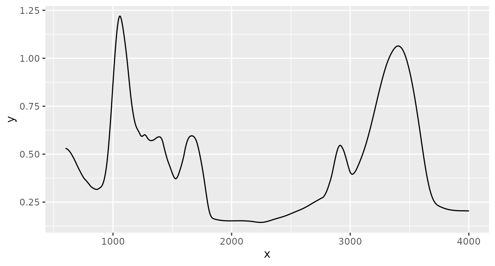
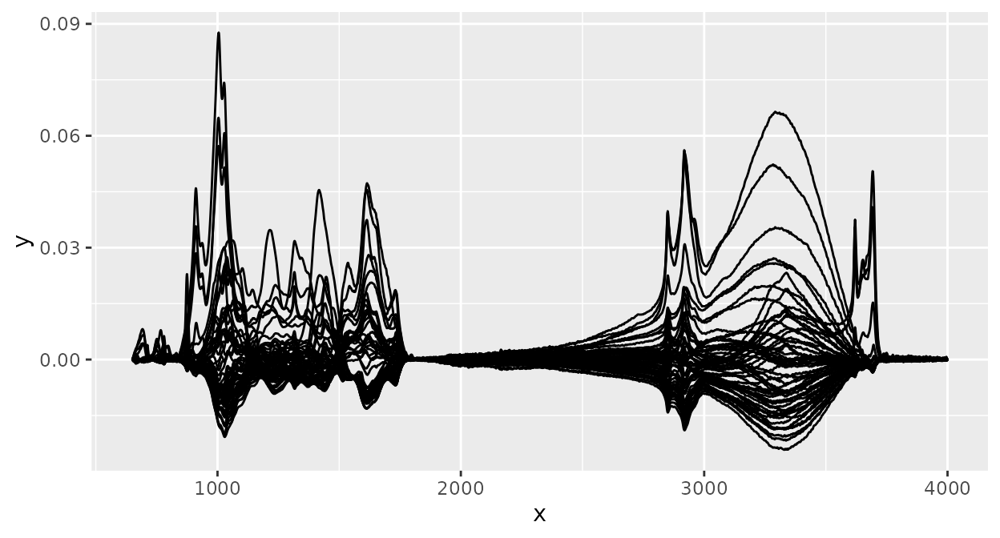

Introduction to the 'ir' package
Henning Teickner
Source:vignettes/ir-introduction.Rmd
ir-introduction.RmdIntroduction
Purpose
This vignette shows how to use main functions of the ‘ir’ package.
This includes data import, data export, functions for spectral
preprocessing, and functions for plotting. This vignette does not
explain the data structure of ir objects (the objects ‘ir’
uses to store spectra) in detail and it does not describe general data
manipulation functions (e.g. subsetting rows or columns, modifying
variables) (for this, see vignette Introduction
to the irclass). This vignette also does not explain
the purpose of the spectral preprocessing functions, it just shows how
to use them.
Structure
The vignette has three parts:
- Data import and export
- Plotting spectra
- Spectral preprocessing
In part Data import and export,
I will show how to import spetra from csv files and how to
import spetra from Thermo Galactic’s spectral files (file extension
.spc). I will also show how to export ir
objects as csv files. To this end, I will use sample data
which comes along with the ‘ir’ package. In part Plotting spectra, I will show how to create
simple plots of spectra and how these plots can be modified (for example
to produce nice graphs for publications). In part Spectral preprocessing I will show
the main preprocessing functions included in the ‘ir’ package and they
can be combined to form preprocessing pipelines of increasing
complexity.
Data import and export
Data import
To test importing spectra from files, I’ll use sample data provided
in the ‘ir’ package (in folder inst/extdata). First, I’ll
show how to import spectra from csv files and then how to
import Thermo Galactic’s spectral files (file extension
.spc).
csv files
Spectra from csv files can be imported with
ir_import_csv(). This function can import spectra from one
or more csv files with the following format:
| wavenumber | GN.11.389 | GN.11.400 | GN.11.407 | GN.11.411 |
|---|---|---|---|---|
| 4000 | 0.0003612 | 0.0001991 | 0.0001044 | 0.0001983 |
| 3999 | 0.0004313 | 0.0003787 | 0.0002027 | 0.0002307 |
| 3998 | 0.0005014 | 0.0005583 | 0.0003203 | 0.0002631 |
| 3997 | 0.0005712 | 0.0007378 | 0.0003938 | 0.0002954 |
| 3996 | 0.0006667 | 0.0009148 | 0.0004075 | 0.0003405 |
| 3995 | 0.0007045 | 0.0009870 | 0.0004077 | 0.0003683 |
This is a subset of the data we will import in a few moments. The
first column must contain spectral channel values (“x axis values”,
e.g. wavenumbers for mid infrared spectra), and each additional column
represents the intensity values (“y axis values”, e.g. absorbances) of
one spectrum. In the example above, there are four spectra in the
csv file.
To import the data, you can simply pass the path to the file to
ir_import_csv():
d_csv <-
ir_import_csv(
"../inst/extdata/klh_hodgkins_mir.csv",
sample_id = "from_colnames"
)The argument sample_id = "from_colnames" tells
ir_import_csv() to extract names for the spectra from the
column names of the csv file.
If you have additional metadata available, you can bind these to the
ir object in a second step (note: here, I use functions
from the ‘dplyr’ package to
reformat the metadata; you don’t need to understand the details of this
data cleanup to follow the rest of this vignette):
library(dplyr)
#>
#> Attaching package: 'dplyr'
#> The following object is masked from 'package:kableExtra':
#>
#> group_rows
#> The following objects are masked from 'package:stats':
#>
#> filter, lag
#> The following objects are masked from 'package:base':
#>
#> intersect, setdiff, setequal, union
library(stringr)
# import the metadata
d_csv_metadata <-
read.csv(
"./../inst/extdata/klh_hodgkins_reference.csv",
header = TRUE,
as.is = TRUE
) |>
dplyr::rename(
sample_id = "Sample.Name",
sample_type = "Category",
comment = "Description",
holocellulose = "X..Cellulose...Hemicellulose..measured.",
klason_lignin = "X..Klason.lignin..measured."
) |>
# make the sample_id values fit to those in `d_csv$sample_id` to make combining easier
dplyr::mutate(
sample_id =
sample_id |>
stringr::str_replace_all(pattern = "( |-)", replacement = "\\.")
)
d_csv <-
d_csv |>
dplyr::full_join(d_csv_metadata, by = "sample_id")Now, d_csv has addition columns with the metadata
contained in the separate file.
Thermo Galactic’s spc files
Spectra from spc files can be imported with
ir_import_spc(). This function can import spectra from one
or more spc files:
d_spc <- ir_import_spc("../inst/extdata/1.spc", log.txt = FALSE)In this case, names for the spectra and other metadata are extracted
from the spc file(s) and added to the ir
object. You can inspect d_spc to see these additional
variables. The option log.txt = FALSE means that some of
the metadata will not be imported. To import these additional metadata,
you need to install version 0.200.0.9000 or higher of the ‘hyperSpec’
package, which is currently only available from GitHub (https://github.com/r-hyperspec/hyperSpec).
Data export
Data in ir objects can be exported in many ways. Here, I
show how to export spectra to a csv file. The result has
the same format as the sample data we imported in subsection csv files.
To export the spectra, type:
# export only the spectra
ir_sample_data |>
ir_export_prepare(what = "spectra") |>
write.csv(tempfile("ir_sample_data_spectra", fileext = "csv"), row.names = FALSE)To export the additional metadata contained in an ir
object, type:
# export only the metadata
ir_sample_data |>
ir_drop_spectra() |>
write.csv(tempfile("ir_sample_data_metadata", fileext = "csv"), row.names = FALSE)This exports the metadata to a separate csv file with
the same row and column format as in ir_sample_data.
Plotting spectra
The ‘ir’ package provides a function to create simple plots of spectra:
plot(d_csv)This will plot the intensity values (“y axis values”,
e.g. absorbances) of each spectrum versus the spectral channel values
(“x axis values”, e.g. wavenumbers), connected by a line. All spectra in
an ir object are plotted in the same panel.
For plotting, ‘ir’ uses the ‘ggplot’ package. This means that you can modify plots of spectra with all functions from ‘ggplot2’. For example, we could color spectra according to the sample class:

And of course, we can change axis labels, layout, etc, to create plots nice enough for publications:
plot(d_csv) +
geom_path(aes(color = sample_type)) +
labs(x = expression("Wavenumber ["*cm^{-1}*"]"), y = "Absorbance") +
guides(color = guide_legend(title = "Sample type")) +
theme_classic() +
theme(legend.position = "bottom")
Spectral preprocessing
‘ir’ provides many functions for spectral preprocessing and I’ll show how to use the most important ones. All other preprocessing functions can be used in a similar way. To make it easier to compare the effect each function has, we’ll have a look at the sample spectrum before any preprocessing:
plot(d_spc)
Baseline correction
Baseline correction with a rubberband algorithm (see the
spc.rubberband function in the ‘hyperspec’
package):

Normalization
Normalization of intensity values by dividing each intensity value by the sum of all intensity values (note the different scale of the y axis in comparison to the spectrum before any preprocessing):
d_spc |>
ir_normalize(method = "area") |>
plot()
Normalization of intensity values by dividing each intensity value by the the intensity value at a specific wavenumber (the horizontal and vertical lines highlight that the intensity at the selected wavenumber is 1 after normalization):
d_spc |>
ir_normalize(method = 1090) |>
plot() +
geom_hline(yintercept = 1, linetype = 2) +
geom_vline(xintercept = 1090, linetype = 2)
#> Warning: 1089.59485352039 selected instead of 1090.The warning just says that the spectrum’s wavenumber values did not exactly match the desired value and therefore the nearest value available was selected. To disable this warning, you can interpolate the spectrum to an appropriate resolution (see section Interpolating below).
Smoothing
Smoothing of spectra with the Savitzky-Golay algorithm (see the
sgolayfilt() function from the ‘signal’ package
for details):

Derivative spectra
Savitzky-Golay smoothing can also be used to compute derivative
spectra (here the first derivative is computed by setting the argument
m to 1. See ?ir_smooth() for more
information):
Clipping
Spectra can be clipped to desired ranges for spectral channels (“x axis values”, e.g. wavenumbers). Here, I clip the spectrum to the range [1000, 3000]:
d_spc |>
ir_clip(range = data.frame(start = 1000, end = 3000)) |>
plot()Interpolating
Spectral interpolation (interpolating intensity values for new
wavenumber values) can be performed. Here, intensity values are
interpolated to integer wavenumbers increasing by 1 (by setting
dw = 1) within the range of the data:
d_spc |>
ir_interpolate(dw = 1) |>
plot()This is not easy to see from the plot, but the warning shown above (section Normalization) during normalization now does not appear:
d_spc %>%
ir_interpolate(dw = 1) |>
ir_normalize(method = 1090) |>
plot() +
geom_hline(yintercept = 1, linetype = 2) +
geom_vline(xintercept = 1090, linetype = 2)
Interpolating regions
Sometimes, it is useful to replace parts of spectra by straight lines
which connect the start and end points of a specified range. This can be
done with ir_interpolate_region():
d_spc |>
ir_interpolate_region(range = data.frame(start = 1000, end = 3000)) |>
plot()
#> Warning: 1000.88447606564 selected instead of 1000.
#> • 3000.7249417305 selected instead of 3000.
Binning
Spectral binning collects all intensity values in contiguous spectral ranges (“bins”) with specified widths and averages these:
Scaling
Scaling takes a set of spectra with the same x axis values and then
applies base::scale() on the intensity values of all
spectra for the same x axis value:

Building preprocessing pipelines
With ‘ir’, it is very easy to build complex preprocessing workflows
by “piping” together different preprocessing steps (using the pipe
(%>%) operator in the ‘magrittr’
package):
d_spc |>
ir_interpolate(dw = 1) |>
ir_clip(range = data.frame(start = 700, end = 3900)) |>
ir_bc(method = "rubberband") |>
ir_normalise(method = "area") |>
ir_bin(width = 10) |>
plot()Now, we have a baseline corrected spectrum, "area"
normalized, clipped to [650, 3900], and binned to bin widths of 10
cm.
Further information
Many more functions and options to handle and process spectra are available in the ‘ir’ package. These are described in the documentation. In the documentation, you can also read more details about the functions and options presented here.
To learn more about the structure and general functions to handle
ir objects, see the vignette Introduction to the irclass.
Sources
The data contained in the csv file used in this vignette
are derived from Hodgkins et al.
(2018)
Session info
#> R version 4.4.3 (2025-02-28)
#> Platform: x86_64-pc-linux-gnu
#> Running under: Ubuntu 24.04.2 LTS
#>
#> Matrix products: default
#> BLAS: /usr/lib/x86_64-linux-gnu/openblas-pthread/libblas.so.3
#> LAPACK: /usr/lib/x86_64-linux-gnu/openblas-pthread/libopenblasp-r0.3.26.so; LAPACK version 3.12.0
#>
#> locale:
#> [1] LC_CTYPE=C.UTF-8 LC_NUMERIC=C LC_TIME=C.UTF-8
#> [4] LC_COLLATE=C.UTF-8 LC_MONETARY=C.UTF-8 LC_MESSAGES=C.UTF-8
#> [7] LC_PAPER=C.UTF-8 LC_NAME=C LC_ADDRESS=C
#> [10] LC_TELEPHONE=C LC_MEASUREMENT=C.UTF-8 LC_IDENTIFICATION=C
#>
#> time zone: UTC
#> tzcode source: system (glibc)
#>
#> attached base packages:
#> [1] stats graphics grDevices utils datasets methods base
#>
#> other attached packages:
#> [1] ggplot2_3.5.1 stringr_1.5.1 dplyr_1.1.4 ir_0.4.0
#> [5] kableExtra_1.4.0
#>
#> loaded via a namespace (and not attached):
#> [1] tidyr_1.3.1 sass_0.4.9 generics_0.1.3
#> [4] xml2_1.3.8 hyperSpec_0.100.2 jpeg_0.1-11
#> [7] stringi_1.8.7 lattice_0.22-6 digest_0.6.37
#> [10] magrittr_2.0.3 evaluate_1.0.3 grid_4.4.3
#> [13] RColorBrewer_1.1-3 fastmap_1.2.0 jsonlite_2.0.0
#> [16] brio_1.1.5 purrr_1.0.4 viridisLite_0.4.2
#> [19] scales_1.3.0 lazyeval_0.2.2 textshaping_1.0.0
#> [22] jquerylib_0.1.4 Rdpack_2.6.3 cli_3.6.4
#> [25] rlang_1.1.5 rbibutils_2.3 munsell_0.5.1
#> [28] withr_3.0.2 cachem_1.1.0 yaml_2.3.10
#> [31] tools_4.4.3 deldir_2.0-4 interp_1.1-6
#> [34] colorspace_2.1-1 vctrs_0.6.5 R6_2.6.1
#> [37] png_0.1-8 lifecycle_1.0.4 fs_1.6.5
#> [40] htmlwidgets_1.6.4 MASS_7.3-64 ragg_1.3.3
#> [43] pkgconfig_2.0.3 desc_1.4.3 pkgdown_2.1.1
#> [46] bslib_0.9.0 pillar_1.10.1 gtable_0.3.6
#> [49] Rcpp_1.0.14 glue_1.8.0 systemfonts_1.2.1
#> [52] xfun_0.52 tibble_3.2.1 tidyselect_1.2.1
#> [55] rstudioapi_0.17.1 knitr_1.50 latticeExtra_0.6-30
#> [58] farver_2.1.2 htmltools_0.5.8.1 labeling_0.4.3
#> [61] rmarkdown_2.29 svglite_2.1.3 testthat_3.2.3
#> [64] signal_1.8-1 compiler_4.4.3